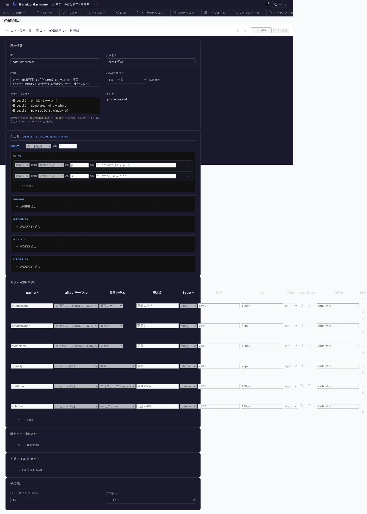

ViewDefinition 編集
対象画面:
ViewDefinitionEditor(frontend/src/components/view-definition/ViewDefinitionEditor.tsx) ルート:/w/:wsId/view-definition/edit/:viewDefinitionId種別: マルチインスタンスタブ
概要
ViewDefinition (画面表示用 projection) を 1 件編集する。一覧画面の列定義 / 明細画面の表示項目 / 検索結果のフォーマットなど、UI 側で必要な data shape を定義する。View (DB ビュー) とは別レイヤ。
到達経路
- ViewDefinition 一覧 (
/view-definition/list) → 行クリック - 画面項目編集 (
/screen/items/:id) で項目のpresentation.viewDefinitionIdを選んだ際の編集ジャンプ - 直接 URL:
/w/<wsId>/view-definition/edit/<viewDefinitionId>
画面構成

主要エリア
- EditorHeader — 名前 + id 変更 + 保存
- 基本情報 — 名前 / source (table or view) / 用途 (list / detail / form / dropdown 等) / 説明
- 項目定義 (列) — 表示順 / 項目名 / source field / ラベル / 表示形式 (currency / date / link 等) / sortable / filterable
- デフォルト sort / filter — 初期状態の並び / 検索条件
主要操作
| 操作 | 手段 | 結果 |
|---|---|---|
| 項目追加 | 「項目を追加」 | source field 選択 (table カラム or 計算式) |
| 項目並び替え | 行ドラッグ | 画面での列順序に直結 |
| 表示形式設定 | 行のセルクリック | currency / date / link / image 等から選択 |
| デフォルト sort | 「ソート設定」 | 1 つ以上の field で初期 sort |
| 保存 / 破棄 | Ctrl+S / 「破棄」 | edit-session 経由 |
| rename | EditorHeader の id 変更 | RenameEntityDialog |
データ前提
- 新規: source 0 件、最低 source + 1 項目で意味
- 意味のある状態: retail の
cart-item-viewerは cart-item テーブルから 商品名 / 数量 / 単価 / 小計 / 削除リンク を投影
関連仕様書
docs/spec/view-definition.md— 仕様 / 用途別フィールド集合docs/spec/draft-state-policy.md— schema 違反保存可
関連 skill
/generate-code—react/nextjstechStack で本 ViewDefinition から table / list component を自動生成
既知の制約・注意
- ViewDefinition は UI 視点の projection で、SQL 視点の DB ビュー (
view-editor) とは別物 - source に DB ビューを指定すれば「DB ビュー → ViewDefinition → 画面 component」の 3 段重ね可能
- 用途 (list / detail / form / dropdown) ごとに 必須項目集合が異なるため、用途変更時は項目を再確認